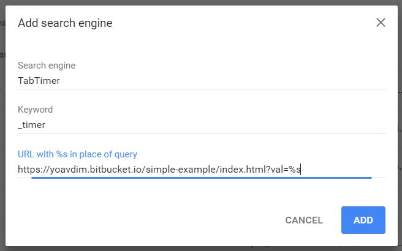

How To Activate The TabTimer From The Search Bar?
Chrome Extention
currently not ready yet
Chrome Settings
- go to: chrome://settings/searchEngines
- under "default search engines", click on ADD
- insert this URL:https://yoavdim.bitbucket.io/simple-example/index.html?val=%s
you can select your own name and keyword, for this example I used:

- all done. now open a tab, type the keyword (here: _timer), press the space key, and insert the time
- if you want to count up: type "stopper"
Copyright © 2018, Yoav Dim
Feel free to use this project, but I forbid redistributing or seling of this project/website/code, or any part of it,
without direct confirmation from the original creator, myself.
This project was made for my own use, and made available online for anyone who wish to use it,
without any warrenty or responsibilty from my side.
I hope you will find my work helpful,
yoav dim yoav9.goo@gmail.com